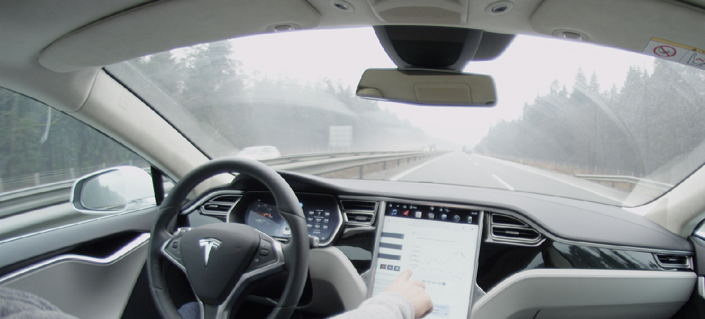

autopilot w samochodach tesla
Teslę można prowadzić z fotela pasażera. Przekonuje o tym film, zamieszczony na Facebooku. Towarzyszący mu wpis brzmi: „Gdyby drogami poruszały się tylko Tesle, nie byłoby wypadków”.
Kwestia legalności
W istocie zaawansowany autopilot Tesli pozwala na autonomiczną jazdę na autostradzie, jednak poruszanie się po drodze publicznej samochodem, w którym fotel kierowcy pozostaje pusty, jest niedozwolone.Debata o autonomicznej jeździe prowadzona jest na świecie od co najmniej 2013 r., gdy Elon Musk wypowiedział się publicznie, że dobrze jest mieć autopilota w samochodzie. Jednak nawet w ojczyźnie Tesli, Stanach Zjednoczonych, brakuje jednolitego prawodawstwa na ten temat.
co nas czeka
Prace nad samochodami, które będą mogły jeździć bez czynnego udziału kierowcy, prowadzi wielu producentów – także europejskich (jak choćby Daimler) i japońskich (Nissan). O ile więc technologia będzie już w niedalekiej przyszłości gotowa do tego, żeby wyręczyć kierowcę w prowadzeniu samochodu, o tyle w pełni autonomiczną jazdę mogą na długo zablokować nierozwiązane problemy prawne, etyczne i kwestia ochrony danych.